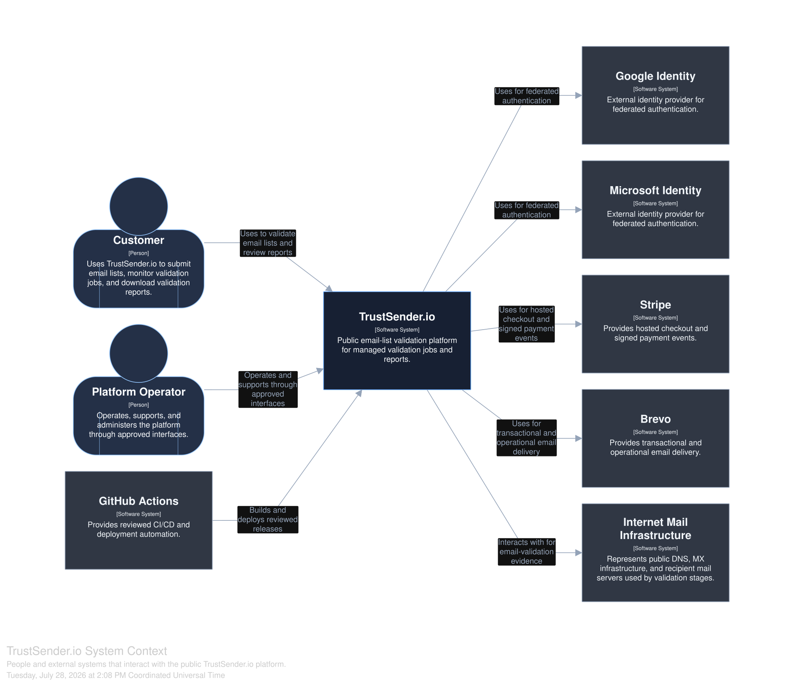
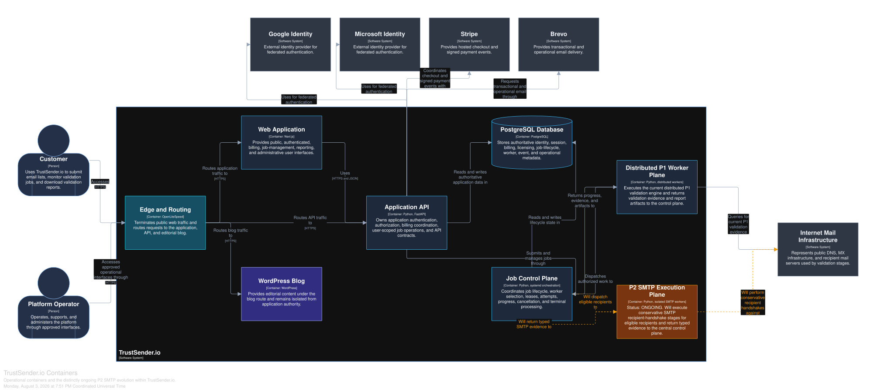

Selected engineering case study Production SaaS
Engineering a distributed validation platform from product surface to worker execution.
TrustSender.io is a high-volume email verification SaaS built across a modern web experience, FastAPI services, PostgreSQL, payments, editorial content and distributed validation workers. This portfolio shows the system boundaries and engineering decisions without exposing private implementation detail.
Software ArchitectureDistributed SystemsBackend EngineeringProduct InfrastructureCI/CD
The product
A verification workflow designed around campaign days, not idle subscriptions.
TrustSender.io focuses on bulk cold email lists. Users activate a Day Pass when they are ready to validate, process lists through a layered verification workflow and export clear deliverable, risky and undeliverable results.
High-volume by design
Bulk validation is treated as an end-to-end workflow, with application orchestration separated from distributed execution.
Layered verification
A 14-layer model combines syntax, domain, DNS, MX and risk-oriented signals before the final classification.
Time-window licensing
Day Passes activate only when validation starts, unlocking unlimited verification during one active 24-hour window.
Privacy-focused handling
Uploaded list data moves through authenticated, controlled workflows with limited retention and automatic purging policies.
Architecture
Architecture built around clear system boundaries.
The system is intentionally decomposed into experience, application authority, persistent state, validation control, distributed execution and external services. The diagrams below are the public, sanitized views of those boundaries.
{kind=link}
{kind=link}

{kind=link}

Engineering decisions
Boundaries first. Scale where the workload actually lives.
The architecture avoids collapsing the product into a single application process. Each major responsibility can evolve without obscuring who owns state, orchestration or execution.
Separate experience from execution
Next.js owns product interfaces while validation workloads live behind API and worker boundaries instead of blocking the web edge.
Experience boundaryKeep application authority explicit
FastAPI represents the application boundary for authenticated product workflows and orchestration rather than distributing authority across clients.
API authorityPersist workflow state deliberately
PostgreSQL provides a clear system of record for durable product and validation workflow state while execution remains independently scalable.
Data ownershipDistribute validation work
The P1 worker plane is modeled separately from the control plane so high-volume validation can scale as execution, not as frontend complexity.
Distributed workersIsolate editorial responsibility
WordPress remains an editorial CMS boundary rather than becoming the application frontend or product API authority.
CMS isolationMake evolution visible
P1 is shown as operational while P2 remains explicitly ONGOING, preserving a clear distinction between delivered architecture and active engineering work.
Architectural honestyValidation model
Fourteen layers. Clear outcomes.
The public product surface exposes a layered verification model rather than a single binary check. The result is reduced to three actionable classes for campaign decisions.
DeliverableRiskyUndeliverable
01–03Syntax & domainStructure, TLD and domain existence
04–06Mail infrastructureMX, A-record and TTL signals
07–10Risk detectionProvider, blacklist, disposable and extinct-domain signals
11–14Quality & historyMX priority, bounce, role-based and catch-all history
Technology stack
A pragmatic stack across product, platform and delivery.
Technology choices are presented here as responsibilities, not as a logo wall. Each component has a defined place in the architecture.
Next.js
Public and authenticated product interfaces.
FastAPI
Application authority and workflow orchestration.
PostgreSQL
Durable product and validation workflow state.
Distributed Workers
Validation workloads outside the application edge.
Stripe
Checkout and Day Pass payment workflows.
WordPress
Isolated CMS responsibility for public content.
GitHub Actions
Automated validation and CI/CD workflows.
Structurizr
System views that keep boundaries and evolution visible.
Security & privacy
Operational safeguards are part of the product design.
Publicly documented controls focus on limiting access, limiting retention and keeping sensitive payment data outside the TrustSender.io application boundary.
Uploaded-list workflows sit behind authenticated product access.
Validation work is processed through explicit backend and execution boundaries.
Uploaded data is subject to automatic purging under retention policies.
Stripe processes payment information; raw card numbers are not stored by TrustSender.io.
What this case study demonstrates
Architecture that connects product thinking with production engineering.
System ArchitectureAPI DesignDistributed ProcessingRelational Data ModelingIdentity & PaymentsCI/CDSecurity BoundariesTechnical Documentation
TrustSender.io
See the product behind the architecture.
Explore the live product, the public product context and the Day Pass model on the official TrustSender.io website.

TrustSender.io is a project developed by CIA DIGITAL BOND G. LTDA, with offices in Brazil and Spain, under the leadership of Founder & CTO Junior Rangel.